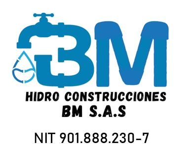

Diseño y construcción de redes para el abastecimiento de agua potable.
Instalación, mantenimiento y reparación de redes sanitarias y alcantarillado.
Diseño e instalación de sistemas de riego para proyectos agrícolas y urbanos.
Construcción y mantenimiento de plantas y sistemas de tratamiento de agua.
Inspecciones técnicas y mantenimiento preventivo de redes hidráulicas.
Construcción e instalación de redes hidráulicas, sanitarias y de gas.
Diseño e instalación de sistemas contra incendio para edificaciones.
Desarrollo de obras civiles y urbanísticas para proyectos públicos y privados.
Años de experiencia.
Calidad garantizada.
Asesoría permanente.